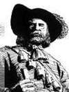

MARIE-CHARLOTTE CHAUVINfiche familiale
*******************************************************************************
sa mère: Anne Archambaultdécède à l'âge de 72 ans.
Naissance en 1627 à Dompierre, Aunis.
Décès le 29 juillet 1699 à Montréal.
Sépulture le 30 juillet 1699 à Notre-Dame de Montréal.
Père: Jacques Archambault de France, Ouest, Rural.
Mère: Françoise TouraultMariage le 27 juillet 1647 à Québec.
1er époux, son père: Michel ChauvinNaissance: en France.
Occupation: Colon.
Le 8 octobre 1650 M. De Maisonneuve le fit comparaitre devant Jean de Saint Père, le greffier, il fit une déclaration rendant compte de sa vie et admettant ses deux mariages, sur quoi il fut expulsé du pays et ses biens vendus.
Père: Gabriel Chauvin de France, Loire, Rural.
Mère: Marie Drouard
*******************************************************************************
Enfant 1 Paul Chauvindécède à l'âge de 12 jours.
Naissance le 27 mars 1650 à Montréal.
Baptême le 27 mars 1650 à Notre-Dame de Montréal.
Parrain M. De Maisonneuve
Décès le 8 avril 1650 à Montréal.
Sépulture le 9 avril 1650 à Notre-Dame de Montréal.
-------------------------------------------------------------------------------
Enfant 2 Marie-Charlotte Chauvindécède à l'âge de 67 ans.
Naissance le 5 avril 1651 à Montréal.
Baptême le 5 avril 1651 à Notre-Dame de Montréal.
Elle eut l'honneur d'avoir pour parrain M. d'Ailleboust des Musseaux
et Mademoiselle Mance pour marraine.
Décès à Pointe-aux-Trembles.
Sépulture le 31 octobre 1718 à Pointe-aux-Trembles.
Fille adoptive de Maître
Jean GervaiseMariage le 27 novembre 1663 à Notre-Dame de Montréal.
Union le 19 novembre 1663 contrat: Basset.
|  |
Conjoint: Jean Baudouinn. en 1637, d. en septembre 1713. (sa famille) |
*******************************************************************************
Mariage le 3 février 1654 à Notre-Dame de Montréal.
le 25 mars 1654, Contrat notaire Lambert Closse
2ème époux son père adoptif: Jean GervaiseNaissance en 1621
à Souvigné-sous-Chasteau, Anjou, France.
Occupation: Maître, procureur fiscal
De France, Loire, Rurale. Recrue de 1653. Lors du recensement de 1681, il demeurait à Montréal et possédait 1 fusil, 8 bêtes à cornes et 70 arpents de terre en valeur.
Père: Urbain GervaiseMère: Jeanne Hérissé Pebise
*******************************************************************************
Enfant 1 Louis GervaiseNaissance en 1663
Mariage le 25 novembre 1686 à Montréal.
Conjointe: Barbe PigeonPère: Pierre PigeonMère: Jeanne Godart
-------------------------------------------------------------------------------
Enfant 2 Nicolas GervaiseNaissance en 1665
Capitaine de milice
Mariage le 27 juillet 1693 à Pointe-aux-Trembles.
Conjointe: Madeleine PayetPère: Pierre Payet St-AmourMère: Louise Tessier
-------------------------------------------------------------------------------
Enfant 3 Cécile GervaiseNaissance en 1671
-------------------------------------------------------------------------------
Enfant 4 Urbain GervaiseNaissance en 1673
Mariage le 1ier octobre 1696 à Montréal.
Conjointe: Marie CaronPère: Claude CaronMère: Madeleine VarennesMariage le 19 mars 1701 à Montréal.
Conjointe: Geneviève PerthuisPère: Pierre Perthuis LalimeMère: Claude Damisé
-------------------------------------------------------------------------------
Enfant 5 Charles GervaiseMariage le 26 octobre 1693 à Montréal.
Conjoint: Marie BoyerPère: Nicolas BoyerMère: Marguerite Maclin
-------------------------------------------------------------------------------